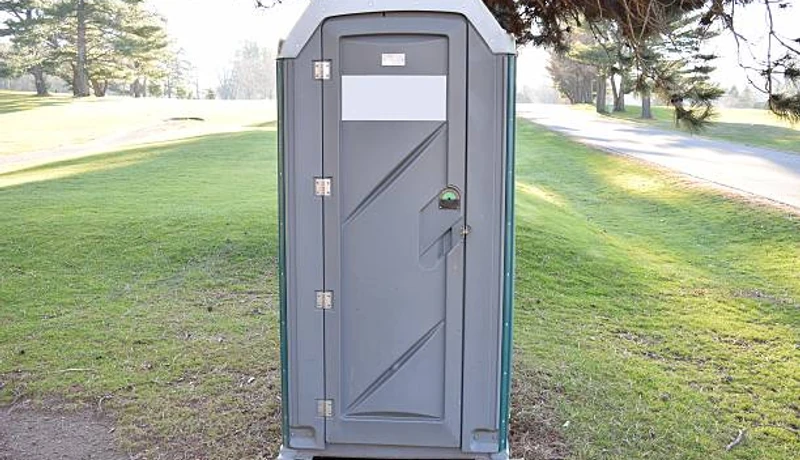

Event Planning
Porta Potty Guide for Downtown Plano Festivals
Hosting a street fair in Haggard Park? Learn exactly how many portable restrooms you need to keep guests happy in the Texas heat.
In Plano's fast-growing innovation economy, construction timelines and corporate events don't wait. From tech campus builds near Downtown Plano to outdoor employee events at Legacy West, FixPilot delivers OSHA-compliant, hospital-grade portable sanitation across Collin County. Same-day delivery and 24/7 emergency service included.
Bypass automated systems. Speak directly to our local Plano logistics team right now to secure units for your site.
No forms. No callbacks. Talk to a real dispatcher right now and lock in delivery.
Not sure how many units? Use our free porta potty calculator.
From Downtown Plano to Frisco borders, our local fleet ensures rapid dispatch.
Every unit goes through a multi-point hospital-grade sanitization process.
Whether you need one unit for a remodel or 100 for a corporate festival, we have the stock.
We carry comprehensive liability insurance and ensure your site meets Texas health codes.
When coordinating waste management and portable sanitation in the Dallas-Fort Worth metroplex, a one-size-fits-all approach simply doesn't work. Renting a porta potty in Plano requires an understanding of the intense North Texas climate, strict HOA regulations in affluent neighborhoods, and rapid corporate growth driving commercial construction.
During a Texas summer, standard holding tanks can become unbearable if not managed correctly. We utilize advanced, heat-resistant blue deodorizing solutions specifically formulated for temperatures exceeding 100°F. This powerful chemical blend neutralizes odors at a molecular level before they can develop. For high-end outdoor events or corporate gatherings, we strongly recommend our climate-controlled luxury restroom trailers, equipped with robust commercial AC to ensure your guests remain cool and comfortable.
Plano is home to major corporate headquarters and massive mixed-use developments. When hosting VIP corporate events, charity runs, or executive retreats in areas like Legacy West or Granite Park, standard porta potties may not meet expectations. We offer a full fleet of VIP flushable units and multi-stall restroom trailers featuring wood-grain flooring, porcelain fixtures, and running hot and cold water to maintain a five-star aesthetic that reflects your company's image.
For home builders operating in Avignon Windhaven, Gleneagles, or performing renovations in Historic Downtown Plano, compliance and cleanliness are paramount to keeping neighbors and HOAs happy. Our weekly serviced porta potty rentals for construction sites ensure you remain OSHA-compliant. Our drivers meticulously place units to avoid driveway damage and discreetly service holding tanks with minimal disruption to the neighborhood, respecting the high standards of Plano's communities.
Ready to secure reliable sanitation for your Plano project?
Speak with our local dispatchers today →From navigating sprawling subdivisions in West Plano to servicing towering commercial builds along the Dallas North Tollway, we provide the most comprehensive porta potty rentals in Collin County.

Heavy-duty construction units for Plano job sites — serving Downtown Plano, Legacy West, and remote Collin County work sites. OSHA documentation provided on request. Same-day delivery available.

VIP trailers with A/C, granite countertops, and LED lighting for Plano events near Legacy West. Available with same-day delivery throughout Collin County and Legacy West venues.

OSHA-certified standard units for Downtown Plano job sites and Plano outdoor events. Same-day delivery to Legacy West and all Collin County locations, weekly service included at no extra charge.

ADA and ANSI A117.1-compliant accessible units for Plano public events and Collin County construction. Grab bars, wider doors, non-slip floors — required at any public-facing Downtown Plano project.

Standalone hand wash stations for Plano food events and Collin County construction near Legacy West. Fresh water tank, soap, paper towels — essential for Downtown Plano and Legacy West events.

Premium flushable units for Collin County outdoor events: real flushing action, fresh water, mirror, interior lighting. Popular for Plano events in Haggard Park and near Toyota Stadium at Frisco vicinity where standard units fall short.

Spacious Collin County event trailers: climate control, handicap-accessible stall, and premium fixtures. Same-day setup for Plano festivals, Downtown Plano concerts, and Toyota Stadium at Frisco vicinity outdoor events.

Designed specifically for multi-story commercial developments along the Tollway. These units feature integrated, heavy-duty steel slings allowing your crane operator to safely hoist sanitation directly to elevated floors, saving time and maximizing site efficiency.

Five-star mobile restroom experience for Plano black-tie events near Legacy West. Premium flooring, fixtures, and lighting make this the obvious choice for Downtown Plano and Legacy West upscale events.

Upgraded Plano units with interior lighting, larger tanks, and improved ventilation. A step above standard — ideal for Downtown Plano events and multi-week Collin County construction projects.

Holding tank pump-outs for Collin County construction projects and Plano events. Emergency service available 24/7 throughout Downtown Plano, Legacy West, and the full Plano metro.

After-hours emergency porta potty service for Collin County: Downtown Plano construction emergencies, Legacy West event backup, Haggard Park last-minute project starts. Plano same-night delivery available.
Not sure what your job site or event needs? Use this quick comparison guide to find the perfect sanitation solution based on your guest count and compliance requirements.
| Unit Type | Best For | Key Features | Capacity (Approx) |
|---|---|---|---|
| Standard Porta Potty | Construction, Casual Events, Parks | Ventilated, Urinal, Hand Sanitizer | 1 per 10 workers / 50 guests |
| Flushable VIP Unit | Corporate Picnics, Backyards | Foot-pump flush, Hidden Waste, Sink | 1 per 40 guests |
| ADA Compliant Unit | Public Festivals, Code Compliance | Ground level access, Grab bars, Oversized | Required 1 per 20 std. units |
| Luxury Trailer (2-10 Stalls) | Weddings, VIP Areas, Film Sets | A/C, Running Water, Porcelain Toilets | 150 - 800+ guests |
Still unsure? We can calculate exact numbers for you.
Call for Expert Sizing →Navigating local regulations in Plano and the greater DFW area is critical to avoid fines and project delays. Our logistics team handles the placement strategy to keep your site 100% legal.

We believe in transparent, upfront pricing with zero hidden fees. While exact costs fluctuate based on inventory and season in the Metroplex, your rental price is determined by three main factors:
A standard event unit is our most affordable option, while multi-stall luxury AC trailers command a premium. Bulk orders for large DFW sites receive scaled pricing.
Event units are typically billed on a flat weekend rate. Construction rentals in Plano are billed on a recurring 28-day cycle.
One cleaning per week is standard. For high-traffic sites where adding more units isn't physically possible, we can schedule twice-weekly or daily pumping.
Want an exact number for your project?
Call our local dispatchers. It takes less than 2 minutes to get a binding quote.
Call →
Texas event seasons drive high demand for luxury trailers and ADA units. Here is our recommended timeline to secure inventory in Plano.
March - May. Book 4-6 weeks in advance. This is peak wedding and outdoor festival season in North Texas. AC trailers sell out quickly.
June - August. Book 2-3 weeks in advance. The Texas heat makes air-conditioned units mandatory for any outdoor corporate event.
Sept - Nov. Book 3-4 weeks in advance. Weather cools down and outdoor construction projects, along with tailgates, ramp up heavily.
The biggest fear of renting a porta potty is the mess and the smell, especially in the Texas heat. We eliminate that completely. Our Plano technicians follow a strict 4-point protocol.
Using high-powered vacuum trucks, we completely pump out all waste and transport it to approved Collin County wastewater facilities.
All interior surfaces—walls, floors, urinals, and seats—are cleared of debris and vigorously scrubbed to remove dirt and grime.
We apply industrial-grade disinfectants. We then recharge the tank with a specialized blue deodorizing solution engineered to withstand the Texas sun.
We fully replenish all consumables, including high-capacity 2-ply toilet paper rolls and hand sanitizer dispensers, ensuring the unit is ready for use.
Plano is a dynamic Collin County community where construction activity, outdoor events, and residential growth create year-round demand for reliable portable sanitation. From the corridors near Legacy West to the neighborhoods of Downtown Plano, Legacy West, and Haggard Park, every part of Collin County has a reason to call FixPilot — construction sites, events, or emergency backup near Toyota Stadium at Frisco vicinity.
Our Plano depot enables rapid same-day delivery to Downtown Plano and all of Collin County.
Construction and event delivery to Legacy West — same-day available throughout Collin County.
Serving Haggard Park residential and commercial projects with OSHA-certified units.
Luxury restroom trailers and standard units for events and construction in Allen.
Same-day delivery to Frisco and all surrounding Collin County communities.
Serving contractors and event planners in McKinney and throughout Collin County.
Reliable porta potty service to Richardson, Downtown Plano, and all of Collin County.
We also provide fast, reliable service to contractors and residents in these nearby Collin County communities:
*Prices may vary by duration and location in Collin County. Call for exact quote.
Get Your Free Plano Quote2026 Rental Cost Guide
Standard, deluxe & luxury pricing explained
How Many Units Do You Need?
Calculate the right number for your event or site
OSHA Compliance Guide
Requirements for construction sites
Construction Site Services
OSHA-compliant units for job sites
Luxury Restroom Trailers
VIP-grade trailers for weddings & events
Free Quote Calculator
Get an instant estimate in 60 seconds
The portable sanitation market in Plano operates at three scales simultaneously. At the large scale: multi-month construction contracts at Legacy West-adjacent commercial developments and infrastructure projects spanning Collin County's most active corridors — Downtown Plano, Legacy West, and Haggard Park. At the event scale: luxury restroom trailers for Plano's wedding circuit near Toyota Stadium at Frisco vicinity and outdoor festivals in Downtown Plano and Allen. At the residential scale: single-unit homeowner rentals throughout Frisco and Collin County's established neighborhoods.
Collin County's construction activity shapes FixPilot's Plano service more than any other factor. General contractors building near Legacy West, developers expanding into Haggard Park and Allen, and infrastructure contractors working throughout Legacy West and Frisco all need reliable OSHA-compliant portable sanitation delivered on a documented weekly schedule. Our Plano team has learned the access protocols, permit requirements, and delivery windows for every active construction corridor in Collin County.
Toyota Stadium at Frisco vicinity and the surrounding Downtown Plano entertainment district anchor Plano's event sanitation segment. Corporate events, outdoor weddings, multi-day festivals, and private Legacy West gatherings throughout Collin County require premium restroom facilities that standard construction rental companies don't stock. FixPilot's Collin County event fleet — luxury trailers, deluxe units, ADA-compliant options — was built specifically for Plano's quality-conscious event market.
Plano's Collin County construction market is driven primarily by technology sector growth, corporate campus construction, and innovation economy events centered around Legacy West and extending throughout the Downtown Plano and Legacy West development corridors. Active job sites in Haggard Park and Allen keep a consistent contractor workforce active in Collin County year-round, generating steady demand for OSHA-compliant portable restrooms with documented weekly service schedules. FixPilot maintains dedicated Collin County inventory to serve same-day construction deliveries to Downtown Plano, Legacy West, and every active construction zone in the Plano metro. The Legacy West corridor represents the highest-demand construction zone in Collin County, where projects range from commercial mixed-use development to infrastructure upgrades along the Frisco perimeter.
Plano's event market is anchored by annual gatherings near Toyota Stadium at Frisco vicinity and throughout the Downtown Plano and Haggard Park entertainment corridors in Collin County. The seasonal event calendar — outdoor concerts, community festivals, weddings at venues near Legacy West, and Collin County civic gatherings — creates consistent premium portable sanitation demand from spring through fall. Luxury restroom trailers for upscale Legacy West and Allen event venues, standard units for large Collin County community gatherings, and ADA-compliant options for public events near Toyota Stadium at Frisco vicinity are all part of FixPilot's Plano event service offering. The growing outdoor wedding venue market in Frisco and Haggard Park reflects Plano's emergence as a destination for outdoor celebrations throughout Collin County.
Contractors working in Downtown Plano, event planners organizing gatherings near Toyota Stadium at Frisco vicinity, and homeowners in Allen and Frisco managing Plano renovation projects choose FixPilot over competitors because our Collin County-based operation delivers local expertise that national vendors cannot provide. We know the delivery windows, access requirements, and permit procedures for construction sites near Legacy West and throughout the Legacy West development corridor. Our Collin County dispatch team answers every call — no automated systems, no call centers routing your Plano order through another state. Same-day delivery is standard, not a premium, for all of Collin County.
Crucial guides for event planning, HOA compliance, and construction regulations in Collin County.
Hosting a street fair in Haggard Park? Learn exactly how many portable restrooms you need to keep guests happy in the Texas heat.

Planning an elegant outdoor wedding near Willow Bend? See why climate-controlled luxury trailers provide the ultimate comfort.

Remodeling your home? Discover how to place and camouflage portable units to stay compliant with strict neighborhood associations.

Avoid fines on your Legacy West commercial build. Learn exactly what OSHA demands for handwashing stations and sanitation capacity.
Porta Potty Rental in Allen
Learn More →Porta Potty Rental in Garland
Learn More →Real feedback from contractors, event planners, and homeowners across Collin County.
"We needed reliable construction porta potty rentals in Plano for a new subdivision near Russell Creek. The delivery was incredibly fast, and their weekly pump-out service is the best in Collin County."
Michael R.
Site Superintendent
"Rented a luxury restroom trailer for a high-end corporate event in Legacy West. The air conditioning was powerful enough to beat the Texas heat, and the units were impeccably clean."
Jessica B.
Corporate Event Planner
"Excellent service for our neighborhood festival in Downtown Plano. The hand wash stations and standard units were spotless upon arrival."
Daniel T.
Festival Organizer
Real answers for Plano customers. More questions? Call (833) 652-9344 anytime.
Same-day delivery to Collin County is standard — not a premium service. Our Plano depot dispatches to Downtown Plano, Legacy West, Haggard Park, Allen, and Frisco daily. Orders placed before 2 PM in Plano arrive the same day. For emergency needs near Legacy West or in Frisco, call (833) 652-9344 and we'll confirm a delivery window for your Collin County location immediately.
Yes — Downtown Plano, Legacy West, Haggard Park, Allen, Frisco, and the full extent of Collin County are on our regular delivery routes. Our Plano drivers run these neighborhoods daily and can confirm same-day availability for any address in Collin County. Call (833) 652-9344 for immediate confirmation.
All FixPilot units at Plano job sites meet OSHA 29 CFR 1926.51 — one unit per 20 workers per 8-hour shift, positioned within 600 feet of the work area, serviced on schedule. We deliver an OSHA compliance spec sheet with every Collin County construction order. Your Downtown Plano or Legacy West job site will pass inspection without scrambling for paperwork.
In Collin County, standard porta potties run $75–100/day with weekly service. Upgraded deluxe units are $100–150/day. ADA-compliant units for Plano public events cost $120–160/day. Luxury restroom trailers for events near Legacy West or Toyota Stadium at Frisco vicinity start at $400/day. Multi-week Collin County construction contracts qualify for volume discounts. Call (833) 652-9344 for a precise Plano project quote.
National chains route Collin County orders through centralized dispatch — meaning the person confirming your Plano delivery has never driven Downtown Plano or navigated Legacy West's access restrictions. FixPilot has its own drivers in Collin County who run Plano routes daily. Our units leave our Collin County facility clean and arrive on time. That local difference shows in every delivery, every week.
Yes — tech campus and corporate construction delivery near Legacy West and throughout Collin County's innovation corridor is one of our specialties. We understand Fortune 500 procurement requirements: COIs naming the corporate entity, OSHA compliance certification, and service logs in the format most Collin County corporate facilities teams use. Same-day delivery to Downtown Plano and Legacy West tech campuses is standard.
Yes — luxury restroom trailers for corporate all-hands events, product launches, and outdoor employee gatherings near Legacy West and throughout Collin County reflect the quality standard Plano's tech sector clients expect. Our trailers for Downtown Plano and Legacy West corporate events include A/C, premium fixtures, and climate control essential for Plano's outdoor event season.
For Collin County corporate events over 200 employees, we recommend luxury restroom trailers for a premium guest experience near Toyota Stadium at Frisco vicinity and Downtown Plano venues, or deluxe porta potties for more casual outdoor gatherings in Legacy West and Haggard Park. For tech campus construction with 100+ workers near Legacy West, OSHA-certified standard units with weekly service and full compliance documentation are standard.
Yes — FixPilot's Collin County compliance package meets Fortune 500 procurement standards: $2M general liability insurance (with Plano corporate entities named as additional insured if required), OSHA compliance certification, and detailed service logs. We've fulfilled vendor qualification requirements for Collin County technology companies, healthcare systems, and corporate campuses throughout Downtown Plano and Legacy West.
Yes — same-day delivery to construction sites near Legacy West and throughout Downtown Plano and Legacy West in Collin County is standard. Our Plano-based fleet doesn't route orders through a national dispatch center. Local drivers who know Collin County's construction corridors confirm your delivery window within minutes of your call. (833) 652-9344 — answered live in under 15 seconds.
Yes — projects and events near Legacy West are among our most regular Collin County deliveries. Our Plano drivers know the delivery windows, vehicle access requirements, and site coordination protocols for the Legacy West area. Same-day delivery is standard for Collin County locations near Legacy West across Downtown Plano and Legacy West. Call (833) 652-9344 for immediate availability confirmation.
Toyota Stadium at Frisco vicinity and the surrounding Haggard Park corridor are a regular part of our Plano service calendar. We've provided construction porta potties and luxury restroom trailers for events ranging from small private gatherings to large public events near Toyota Stadium at Frisco vicinity in Collin County. Delivery timing, access coordination, and permit guidance for Toyota Stadium at Frisco vicinity-area projects are handled by our Plano team.
Our Plano emergency line (833) 652-9344 is answered live 24/7 — including nights, weekends, and holidays. Our Collin County on-call driver covers Downtown Plano, Legacy West, Haggard Park, and the full Plano metro for after-hours emergencies. Whether it's a Legacy West-area construction inspection failure or a last-minute event backup in Allen, we dispatch immediately with no premium for after-hours service.